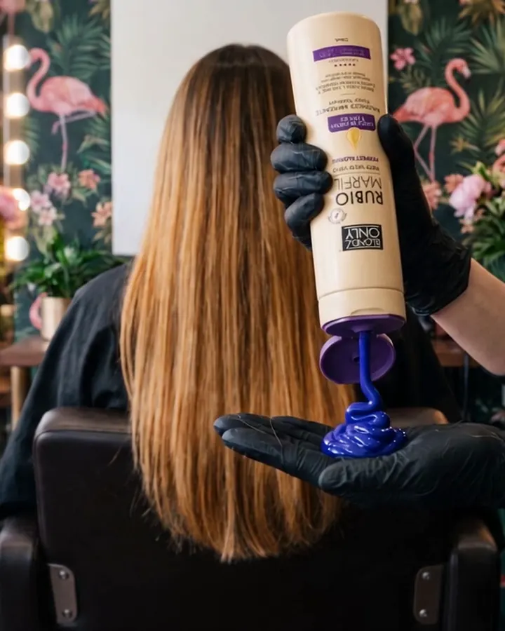
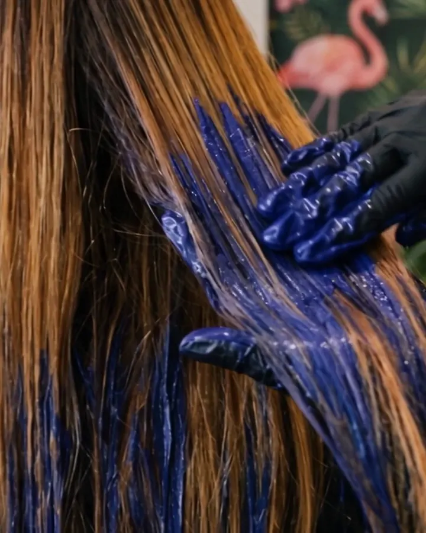
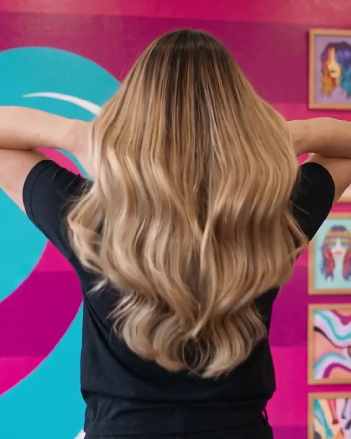

Rubio Marfil
Blonde Pearl
Purple toning · warm ivory-pearl
For highlighted or bleached blondes that turn yellow or brassy.
$16.9011.8 fl oz (350 ml)
Purple toning hair mask
Drag the line to compare. Results shown are illustrative.
A purple toning mask that neutralizes yellow and brassy tones for a soft, luminous ivory-pearl blonde. With argan oil and biotin.
Every mask is 11.8 fl oz (350 ml), made with argan oil and biotin, and shipped by Amazon.
Rubio Marfil
Purple toning · warm ivory-pearl
For highlighted or bleached blondes that turn yellow or brassy.
Canas Plata
Purple toning · icy platinum
For very light blonde, platinum (levels 9 to 10) and gray hair that has turned yellow.
Rubio Cenizo
Blue-violet toning · cool silver-ash
For highlights and balayage that turn orange or brassy.
Cobre Dorado
Color-depositing · vivid copper
For red, copper, auburn and mahogany hair that has faded. Not a blonde toner.
Each film follows one shade on wet hair: the before, the mask going on, and the result.
Results shown are illustrative. Your result depends on your starting color, how porous your hair is and how long you leave the mask on.
Ultra high-purity pigments neutralize yellow, orange and brassy tones, tone on tone.
Argan oil, biotin and pro-vitamin B5 help hydrate and soften color-treated hair.
A salon-style finish at home, from a formula that is paraben-free and salt-free.
To get rid of brassy or yellow tones at home, use it after shampooing whenever brass shows up. With Irish Copper, whenever your copper starts to fade.

Wash your hair as usual and rinse. Squeeze a generous amount of mask into your palm.

Work it through damp hair from roots to ends. Leave it on for 1 to 5 minutes.

Rinse well. The longer you leave it on, the more intense the tone.
First time? Very light, platinum and gray hair takes pigment fast. Start with 1 to 2 minutes and add time on your next wash if you want a stronger result.
Fifteen seconds for each shade. Follow @blondzonlyus on Instagram and @girlzonlylatam on TikTok.
4.5
A Blondz Only short film
Maya's blonde keeps turning brassy, and every blonde in the café seems to know something she doesn't. Sixty-six seconds, best with sound on.
Blonde Pearl for highlighted or bleached blondes that turn yellow or brassy and want a warm ivory-pearl blonde. Icy Cool Blonde for very light blonde, platinum and yellowed gray hair. Silver Ash Blonde for highlights that turn orange and should look cool and ashy. Irish Copper for red and copper hair that has faded.
Purple cancels yellow: Blonde Pearl gives a warm ivory-pearl blonde, and Icy Cool Blonde is the intensive purple mask for very light blonde, platinum and gray hair. Blue-violet cancels orange: Silver Ash Blonde neutralizes orange and brassy reflections in highlights and balayage for a cool silver-ash blonde.
1 to 5 minutes on damp hair after shampooing, then rinse. Start short the first time, especially on very light, platinum or gray hair; the longer you leave it, the more intense the tone.
On damp hair, right after shampooing. Work it through from roots to ends, leave it on for 1 to 5 minutes and rinse.
The pigments are strong. Very light, porous or gray hair can pick up a cool tint if the mask stays on too long. Start with 1 to 2 minutes, and if you see a tint, it usually softens with your next wash.
It is a mask, not a shampoo. Wash with your usual shampoo first, then use the mask on damp hair for 1 to 5 minutes. In the UK, purple toning products are often called silver.
Yes. Icy Cool Blonde is made for gray and white hair that has turned yellow. Shoppers also use Silver Ash Blonde on highlights while their gray grows in.
No. Irish Copper is a color-depositing (colour-depositing) mask for red, copper, auburn and mahogany hair. It revives faded copper tones and is not meant for blonde hair.
Ultra high-purity pigments, argan oil, biotin and pro-vitamin B5. The formula is paraben-free and salt-free.
On Amazon in the United States, and on Amazon UK for shoppers in Europe. Use the flag at the top of the page to switch stores. Check the product page for current coupons. Questions? Write to info@blondzonly.com.
Four shades, one size, made with argan oil and biotin.
Buy Blonde Pearl on Amazon